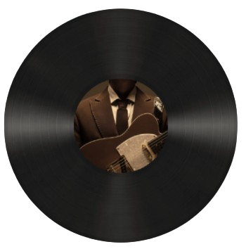

Hatdog Akala mo tapos na no? no, meron pa hehe. Siguro, this song na yung makakapag describe nang lahat. I actually heard this song while I was taking a shower and at first nagandahan ako sa tono then I listened to the song closely and wow, na describe nia yung message na gusto kong sabihin sayo paulit ulit. The part where 0:28 “but I’ve changed for the better, and you’re the one to blame” is so true. Upon meeting you, I wasn’t the full me pa, and throughout our journey, andaming nag change sa akin, unti-unti ko shang napansin and I was really proud of myself and I want to thank u for that kasi andami mong pina-realize sa akin talaga, and andami ring nag change sa akin because of you,, andami mong tinuro sa akin without even realizing it and it made me a better person. I want to be the better person sau kaya up until now I’m doing my best to be better for you :) I know I have flaws and I’m not perfect but wala naman perfect sa mundo diba? Hehe. Talagang this song explains all huhu, like yung “I can’t help but feel guilty when I’m taking up your time” which is true kasi sometimes, whenever we are together, naiisip ko baka mag tampo yung mga friends mo na sila ayro kapag tayo magkasama kahit na ilang beses mo naman na sinasabi sa akin na gets naman nila yun and okay lang yun sa kanila but I can’t help it man pero shempre very thankful pa rin ako na both of us ay gusto rin makapag spend ng time together hehe. Thank u so much sa mga hangout na walang sumbat, you really make me happy—you make my inner child happy and thank u baby! Sabi sa 2:58 “I’m gonna work on my temper” e you know me naman na pikunin diba hehe, pero I’m still working on it baby, I’m trying my best para ma-control si anger. Ikaw kasi nang aasar ka lagi e pero wag mo ititigil un ha? Suntukin kita pag tinigil mo un talaga aaway talaga tau bai. Ok kidding aside, the title “be with you” speaks a lot, baby I wanna be with you every single day, for the rest of our lives. (natatae ako habang ginagawa to btw) sounds cheesy right?? Pero I mean it, really. I know we are still students and there’s still a bright future ahead of us pero i hope while building that future is together tayo. Shempre, we’ll still build and grow individually pero meron tayong goal pareho—for our future ganern hehe. Happy birthday ulit. Keep on dreaming baby, go for that dream. Mapapakain din ikaw/tayo ng passion na yan, shempre I’ll be by your side sa journey mo na yan, hindi man ako maalam jan sa passion mo kasi di naman ako musician pero u have my 100% na support!! This is the only way where I can bawi sayo,, sa mga ginawa mo for me. Not that much pero I’m really happy seeing u happy on what u are doing, sa kung saan ka talaga masaya which is yang pagbabanda mo. One day, you’ll be successful din, just like your idols and hopefully I’m still your no. 1 fan when that time comes. Happy birthday again, clyde! Thank you so much dahil meron akong ikaw. Mahal na mahal kita!

The 2:06 verse: "Oh minamahal kita nang lubusan. Ikaw lang at wala nang iba pang makakatumbas pa nitong pag-ibig ko sa'yo na totoo" remember nung binigyan kita ng appreciation letter? na mention ko dun na ito yung song na talagang I dedicated for you? and here we are again, ito ulit dedicated na naman sha sayo pero shempre, anjan na yung specific verse. alam mo, kapagka naririnig ko talaga yang song na yan, ikaw naaalala ko :) talagang pinaramdam mo sa akin na love can be this gentle pala, na it's not always walking on egg shells and in survival mode. your love became my safe place—you became my safe place.
Earl Agustin, Dana Paulene